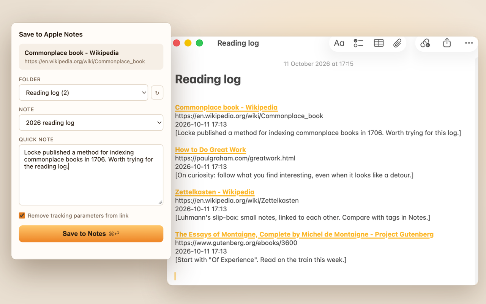
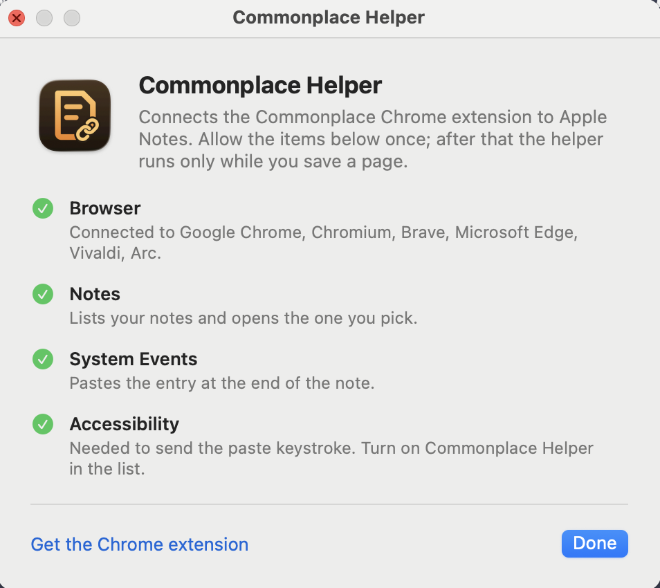

Save links to Apple Notes, with your own notes.
Click Commonplace on any web page, pick a note, add a comment, and save. The link lands at the end of your note, with the page title, the date and your words.

A link, a date and a thought.
Each save adds one tidy entry to the end of a note, so a note becomes a running log of what you've read.
Any note, any folder
Pick from all your notes, including subfolders and other accounts. Commonplace remembers the note you used last, so a daily reading log takes one click.
Your words with the link
Add a comment before you save. It goes in under the link, so you'll remember why you kept it.
Select, then save
Select a passage on the page before you click the icon, and it's filled into your comment for you. Press ⌘↩ to save.
A real link
The page title becomes a clickable link, followed by the address and the date and time, in ordinary Apple Notes text you can edit like anything else.
Clean links
Tracking parameters such as utm_, fbclid and gclid are removed. The parts a link needs, like YouTube's ?v=, stay.
Ordinary notes
Entries are plain note text, so they sync to your iPhone and iPad like the rest of your notes, and you can search, edit or move them in Notes.
How it works
Chrome extensions can't reach Apple Notes on their own, so Commonplace works with a small free Mac app, Commonplace Helper. Chrome starts it only while you save.
Install the helper
Download Commonplace Helper, drag it to Applications and open it once. It's signed and notarized by Apple.
Allow three things
The helper lists what it needs: Notes, to list your notes and open the one you pick, and System Events and Accessibility, to paste the entry at the end of the note.
Save a page
Add Commonplace to Chrome, click its icon on any page, pick a note and save. That's it; the helper has nothing else to set up.

Private by design
There is no Commonplace account and no Commonplace server. The extension talks only to the helper on your Mac, and the helper talks only to Apple Notes. Nothing is sent to me or anyone else.
- No account, no sign-in
- No analytics, tracking or ads
- No network requests at all
- Reads the page only when you open Commonplace
- Your clipboard is put back after each save
- Free and open source, MIT license
Requirements
- A Mac with macOS 13 or later, and Apple Notes.
- Google Chrome, or another Chromium browser: Brave, Microsoft Edge, Arc, Vivaldi or Chromium.
- Commonplace Helper, free from the latest release.
Questions? See Support & FAQ.
Commonplace is free. If it’s useful to you, consider buying me a coffee.